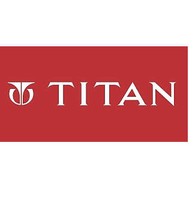
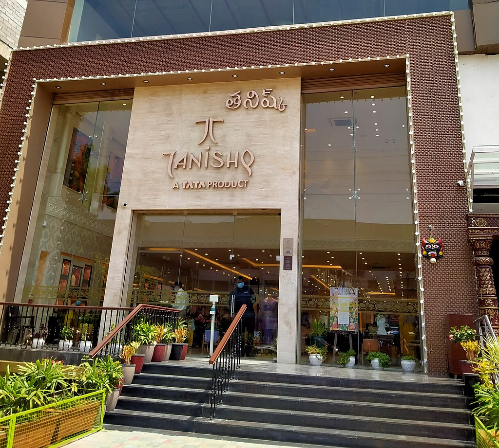

Part of the Tata Group and started as a joint venture with the TIDCO, the company has its corporate headquarters in Electronic City, Bangalore, and registered office in Hosur, Tamil Nadu. Titan company commenced operations in 1984 under the name Titan Watches Limited. In 1994, Titan diversified into jewellery w ith Tanishq and subsequently into eyewear with Titan Eyeplus. In 2005, i t launched its youth fashion accessories brand Fastrack.[9] The company i s the largest branded jewellery maker in India, with more than 80% of its t otal revenues coming from the jewellery segment.[10] As of 2022, Titan has a 6% market share in India's jewellery market.[11] As of 2019, it is also the fifth-largest watch manufacturer in the world.
2011–present
This article needs to be updated. Please help update this article t
o reflect recent events or newly available information. (June 2023)
A Tanishq jewellery store in Hyderabad.

Titan acquired Swiss watchmaker Favre-Leuba in 2011 to enter the Europ
ean market.[22] In 2013, Titan entered the fragrances segment with th
e brand Skinn[23] and later that year, it ventured into the helmets'
category under its brand Fastrack.[24] In the same year, it changed its n
ame to Titan Company Ltd.[25] In 2014, it entered into a
joint venture with Montblanc to establish its retail stores in India
Watches
A Titan Octane series watch.
The watches division comprises brands Fastrack, Sonata, Raga, Nebula, Octane and Xylys. In 2011, the company secured licence for marketing and distribution of Tommy Hilfiger and Hugo Boss watches.[37] Favre Leuba was incorporated in 2012. In 2018, the division accounted for ₹2,126 crore in revenue which was 10% of the total of the company.[38]
Eyewear
In 2007, Titan Industries forayed into the fashion accessories industry with the launch of sunglasses. It introduced Titan Eye Plus that makes frames, contact lenses, prescription eyewear, and sunglasses.[39] The division accounted for ₹415 crore in FY 2016-17 maintaining a stable growth of 8%.
Jewellery
Xerxes Desai started the brand Tanishq in 1995. Zoya was launched in the luxury segment, while Mia, a sub-brand was under Tanishq for work-wear jewellery. Titan's total revenue grew 20.44% in 2017-18 to ₹15,656 crore, of which jewellery sales fetched ₹13,036 crore.[40] In 2016, Titan invested in CaratLane. As of 2022, Titan has a 6% market share in India's jewellery market.[11] OFFICIAL WEBSITE or give us a call at (123) 456-7890.